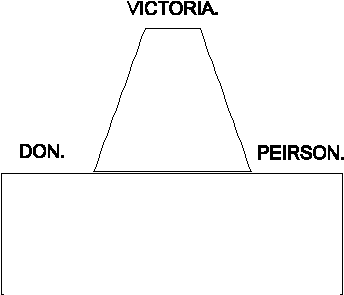

Unveiled 3/9/1890
Sculptor: Georges Wallet born Elbeuf mid C19th
Réunion du Comité pour la Statue
Une réunion du Comité représentant les souscripteurs à la Statue de la Reine, a eu lieu hier l'après-midi à l'Hôtel-de-Ville, mais, faute de quorum, la réunion a été remise à Samedi prochain. Nous nous croyons presque autorisés de faire savoir à nos lecteurs que tout espoir d'avoir un monument permanent du Jubilé loin d'être abandonné par le Comité, est au contraire le sujet d'une étude sérieuse. M. le Rév. J.-J. Balleine, membre du dit Comité, nous a fait voir un tracé sur papier d'un joli monument, lequel, s'il était possible d'en exécuter un pareil, serait un magnifique ornement à notre ville. L'idée de M. Balleine serait de faire exécuter une Statue de la Reine en marbre, Statue qui serait placée sur un piédestal en granit, et recouverte d'une coupole soutenue de quatre colonnes polies, aux chapitaux style corinthien. Le marbre étant couvert, serait nécessairement plus ou moins à l'abri de toute détérioration. Il va sans dire qu'un monument pareil, placé près l'Église de St.-Hélier, serait un splendide Memento de la fête du Jubilé.
Nouvelle Chronique de Jersey 15/6/1887
Jubilé de Sa Majesté
Réunion des souscripteurs à la statue
Une Assemblée des Souscripteurs à la Statue, en commémoration du Jubilé de Sa Majesté, a été tenue Samedi l'après midi 17 courant, à l'Hôtel-de-Ville de St.-Hélier, sous la présidence de Ph. Baudains, écr., Connétable, Président du Comité.
Le 16 Juillet 1887, un Comité avait été chargé de mettre à execution le voeu des Souscripteurs. Le Comité avait communiqué avec Mons. Georges Wallet un Sculpteur de Paris, qui s'était engagé de fournir un modèle de moitié grandeur naturelle et d'en faire parvenir une photographie afin que le Comité puisse suggérer tels changements qu'on jugerait à propos, puis il ferait couler une statue en bronze, soit par Barbedienne ou Thiebot, les célèbres fondeurs de Paris, pour la somme de £370.
Le Comité est d'opinion d'accepter l'offre de M. Wallet.
Chronique de Jersey 21/9/1887
La Statue de la Reine
Le Comite charge a une Assemblee generale des souscripteurs de prendre les mesures necessaires pour l'erection d'une statue de la Reine Victoria a St. Helier, en commemoration de l'annee de son Jubile, s'est reuni Jeudi l'apres midi a l'Hotel de Ville, pour proceder a sa besogne. L'artiste, M. Wallett, fils d'anglais mais residant a Paris, auquel a ete confie la tache, avait envoye au comite, des photographies du modele qu'il avait prepare de ladite statue, pour les faire soumettre a l'appreciation dudit comite. Ces photographies sont vraiement admirables; aussi, sans hesitation aucune le comite s'est-il decide, seance tenante, a faire la commande d'une statue de six pieds quelques pouces...
Le Comite a prie l'artiste de deployer tous ses efforts pour qu'on puisse avoir la statue devoilee a St.-Helier l'anniversaire du Couronnement, a savoir le 28 Juin de cette presente annee...
Nouvelle Chronique de Jersey 25/2/1888
La Statue de la Reine
La patience de notre petite communauté sur nombre de questions, a été si souvent et si rudement mise à l'épreuve, qu'on finit souvent par se fatiguer; on laisse tout aller, on cesse quelquefois même d'espérer les bonnes choses et non sans raison. On se rappelle les longues années qu'il fallut attendre pour la fameuse statue du Général Don; on se rappelle les interminables interpellations à la Chambre des Etats à propos de cette statue, et les nombreuses occasions où force fut de la part de l'autorité souvent de plonger la main dans le sac pour satisfaire aux demandes des artistes, autrement pas de statue; au lieu d'orner aujourd'hui notre Parade, notre "Don" eut porté bonne chance, sans les fortes sommes qu'on avait dépensées, de rester à Paris pour ajouter peut-être aux ornements des jardins de l'Exposition Universelle. La patience est une vertu, il est vrai, mais quand il faut payer le double de la valeur de l'objet qu'on demande et qui plus est attendre dix ans avant de l'obtenir, c'est, il faut l'admettre, le meilleur moyen de pousser la communauté à étudier le bon livre de Job. À propos de la question de patience, on commençait à craindre qu'il allait en être de la statue de la Reine Victoria comme il en avait été de celle de Don, par conséquent, sinon de bon cœur au moins de nécessité, il fallait s'armer de patience. À la suite des diverses réunions du Jubilé à l'Hôtel-de-Ville, en 1887, on se rappelle, on finit par promettre aux souscripteurs, sous quelques mois tout au plus, une belle statue; on applaudit à l'idée, car c'était certes la meilleure manière de commémorer la grande année du Jubilé, s'était donc une belle promesse; mais nous voilà déjà avancés en 1889 et toujours la statue tarde à venir, et la patience s'épuise. Rassurez-vous toutefois, cher citadin de St-Hélier, vous n'aurez pas à attendre dix ans pour la Statue de la Reine Victoria, car cette statue destiné à orner notre ville est finie, le travail est complet et il n'y a maintenant qu'à l'expédier à Jersey. On assure qu'elle sera ici au mois de Mai au plus tard; la photographie est actuellement entre les mains de l'un des membres du comité, et il faut le dire elle paraît jolie. Puisque l'affaire est en bonne voie, la prochaine question à décider en ce moment, c'est bien la question du site, n'est-ce pas? On sait que le comité préconise l'emplacement du Jardin du Weighbridge, et que ce comité a l'intention d'en faire la demande aux États. Sur cette question, chacun est libre d'émettre son opinion. Quand à nous, nous le disons franchement et nous l'avons toujours dit, nous espérons que les États refuseront net ledit emplacement du Jardin du Weighbridge. Le Jardin est parfaitement bien comme il est, et n'a nullement besoin, il nous semble, d'une statue quelconque pour ajouter à sa beauté. D'ailleurs, le mât au centre sert si admirablement lors des illuminations publiques que ce serait dommage de le retirer. Nous l'avons dit en d'autres occasions, le port avec les nombreux mâts de navires, le commerce des pommes de terre, la poussière et le défaut d'ombre, n'est certes pas l'endroit pour une statue royale. Plus que ça, si la statue était placée au centre de ce Jardin, ce serait dire au public: "Vous n'en approcherez pas."
Nouvelle Chronique de Jersey 16/3/1889
La Statue de la Reine
Samedi l`après-midi, un très petit nombre de souscripteurs à la Statue de la Reine, se sont rencontrés à l'Hôtel-de-Ville, sous la présidence de Ph. Baudains, écr., Connétable, pour s'entretenir de la question du piédestal et de l'emplacement qui devra occuper la dite Statue. Sur la question du piédestal, le président annonça qu'on pourrait l'obtenir pour une centaine de livres sterling, est que cette somme, il était à espérer, n'offrirait aucune difficulté à lever. Il faudra faire alors un nouvel appel au peuple. En ce qui regarde la question de l'emplacement, trois propositions furent faites et toutes dûment secondées.
1° Pour emplacement sur le Jardin du Weighbridge 13 voix
2° Pour emplacement près l'Èglise 5 -
3° Pour emplacement sur la Place Royale 3 -
On doit admettre qu'il est à peine juste que la décision de ces quelques personne puissent être acceptée comme définitive sur une question qui appartient à cinq ou six cents souscripteurs. En définitive c'est aux Ètats qu'appartiennent les trois sites, par conséquent c'est aux États seuls à décider cette question.
Une Autre Idée
Puisqu'il y a divergence d'opinion sur la question d'emplacement, et puisqu'il paraît assez facile de soulever des objections, toutes aussi sérieuses que valables contre les trois sites proposés, nous sera-t-il permis de suggérer une nouvelle idée qui, originale si vous le voulez, n'en possède pas moins son côté praticable. Il est à peine nécessaire de répéter ici les obserations ridiculisant mille et mille fois le monument Don sur la Parade. En effet, la seule chose de beau dans ce monument qui plaît à l'oeil, c'est assurément la belle base de granit sur laquelle repose la statue; quant aux deux ailes, les deux statues des femmes, l'une de chaque côté, ces statues ne sont bonnes qu'à vendre pour du vieux fer, car elles ne représentent absolument rien et ne sevent en définitive qu'à faire lever les épaules de pitié. Maintenant voici notre suggestion: Remplacer la Statue Don par la Reine Victoria, puis mettre Don d'un côté et réserver l'autre côté pour Peirson, comme on le voit par ce table:

Vous auriez alors un monument dont nul Jersiais n'aurait honte. Vous auriez réuni sur un seul ??????:
1° Règne de paix;
2° Prospérité locale;
3° Défense de la patrie.
Et s'il nous arrivaient de pousser un peu plus loin l'idée du beau, tout en y faisant miroiter la récompense du patriotisme, ne pourrait-on pas faire enfin de ce monument de la Parade, une sorte de petit autel de la Patrie, ou Panthéon Jersiais en miniature? Ne vous moquez pas de notre idé cher lecteur; Jersey a produit ses patriotes, ses guerriers, ses orateurs, ses poëtes, ses artistes, alors pourquoi ne pas perpétuer leur mémoire? On pourrait le faire en posant leurs bustes aux pieds de ces trois statues. "Aux grands hommes la patrie reconnaissante."
En ce moment il ne faut pas perdre de vue une chose, c'est que le modeste plan que nous avons l'honneur de suggérer, ne coûterait rien, absolument rien que les simples frais de la pose. La prochaine génération s'occuperait de Peirson et des bustes, mais ou moins leur place leur serait réservée.
Nouvelle Chronique de Jersey 8/5/1889
La Statue de la Reine
À l'Èditeur de la "Nouvelle Chronique"
Monsieur, - La nouvelle idée que vous offrez par rapport à la Statue de la Reine, est une aspiration, j'allais presque dire inspiration, très désirable; mais il faudrait un courage mâle pour effectuer le changement que vous suggérez, courage dont j'ose douter l'existence dans notre corps législatif.
Mais supposons qu'il en fût ainsi, et que la Statue de la Reine en bronze prît la place de la monstruosité en fer qui passe pour le Général Don; n'êtes-vous pas un peu trop sévère sur ses deux cousines, toutes laides et inutiles qu'elles soient? Certes vous ne les préconisez pas quand vous voulez les reléguer dans les magasins où l'on achète du vieux fer, et vous avez manqué d'apercevoir leur valeur.
Oh! non. N'allez pas les refondre. Placez-les plutôt sur des sites qui leur conviendraient; car là où elles se trouvent aujourd'hui elles n'ont absolument aucune raison d'être; et je crois qu'au lieu de les anéantir on pourrait les mettre, telles qu'elles sont, à un usage conforme à leur existence actuelle.
On nous a dit que l'une représente (en allégorie, bien entendu) le COMMERCE, l'autre l'AGRICULTURE. Eh! bien. Érigez la première sur le quai Jubilétif auquel notre digne Connétable a donné le nom grandiose de
"DÉBARCADÈRE VICTORIA;"
plantée là elle présiderait sur les destinées commerciales de la Compagnie dite South-Western; et l'autre effigie idiotique perchée commerciales de la Compagnie dite South-Western; et l'autre effigie idiotique perchée a l'extrémité du vieux North Pier, élargi hors raison, serait tout-à-fait à sa place en surveillant l'embarquement du produit de notre agriculture hébétée - les patates. - Et que les deux soient posées chacune sur un bloc en concrète - concrète à la mode de Jersey, - et qu'elles soient placées face à face; comme deux points d'admiration! Deux petites absurdités pour couronner ces deux plus grands absurdités qui leur servirait de base. Et elles seraient de plus un point d'appui, autour desquelles les membres du Comité des Chaussées pouvaient entonner le chant triomphal
FINIS CORONAT OPUS!!
Et en se regardant l'une et l'autre, une sourire malin se dévoilerait sans doute sur leurs lèvres rouillées, et on pourrait sans un trop grand effort de l'imagination supposer que, si elles pouvait parler, on les entendrait se saluer l'une et l'autre, tant pour elles-mêmes que pour les structures dont elles seraient un si digne appanage, avec cette phrase si énergique mais si difficile à traduire sans en perdre la force
"YOU'RE ANOTHER!!"
Monsieur, je vous salue,
J.-J. Balleine.
St. Simon, le 10 Mai 1889
Nouvelle Chronique de Jersey 11/5/1889
The Queen's Jubilee Statue
The subscribers to Her Majesty's Statue acted wisely on Saturday last when they resolved to adjourn their meeting, convened on the subject of the proposed site. The decision to exhibit the statue previous to further discussion has answered admirably, and having been favoured with an opportunity to inspect the statue, we may express the opinion that the expectations of the most sanguine have been fully realised, while the fears entertained on the part of others have been entirely set at naught. The work is artistic to a degree, and as a faithful representation of Her Majesty we believe it will compare favourably with anything of the kind procured by various localities in celebration of the Jubilee. The features and ensemble grow upon the spectator, and a close examination demonstrates the artist's power in design and execution. The anatomy is perfect, and so is the drapery. We feel confident that the subscribers as well as the authorities generally, will at once become convinced that the best possible site would not be any too good for the statue, and, should any difficulty arise with regard to those already designated, we are merely re-echoing the desires of many in suggesting the grounds of Victoria College, which, while affording a picturesque and suitable encadrement, would be highly appropriate.
Jersey Times and British Press 25/6/1889
La Belle Saison à Jersey
La Statue de la Reine
...Au sujet de la statue de la Reine, dont la fête d'inauguration aurait dû être activement pressée, nous nous doutions bien que le piédestal ne serait pas prêt de sitôt. Effectivement, les membres du comité de cette statue, malgré le travail auquel ils ont dû se livrer pour arriver pour arriver à une entente, ne paraissent point d'accord sur une question préliminaire, celle de l'emplacement le plus convenable pour cette statue. Quelques personnes avant de l'avoir vue, s'étaient servis du termse "ridicule;" ces personnes, toutefois, après l'avoir visitée, sont bien vite revenues de leurs plaisanteries.
À propos de la question de l'emplacement, quel que soit le site qu'on s'avisera de choisir, la Parade, le Jardin du Weighbridge, ou près de l'Église, on ne perdra pas de vue que cette Statue nous représente l'image de notre Souveraine bienaimée, de cette souveraine qui, deux fois pendant son beau règne a visité notre île, et nulle part, dans ses vastes domaines, elle n'a rencontré de sujets plus loyaux et plus dévoués à son trône. Notre Reine, en un mot, a droit au respect de tous, et on peut se le persuadert, le jour où sa Statue sera dévoilée, la fête offrira assurément au pays une nouvelle occasion de témoigner son attachement au grand et puissant empire Britannique sur lequel elle étend son sceptre.
Tous les visiteurs pourront voir, en arrivant dans notre île, que nous sommes un peuple fidèle et loyal, soumis à nos souverains, dans un esprit d'ordre et de discipline, ennemi de la license et de l'anarchie. Cette statue sera là un drapeau constamment déployé, témoignage et souvenir de notre respect pour la Gracieuse Souveraine, dont le nom fait découvrir tous les fronts britanniques. GOD SAVE THE QUEEN!
Nouvelle Chronique de Jersey 26/6/1889
La Statue de Sa Majesté
Une réunion peu nombreuse des souscripteurs à la Statue de Sa Majesté eut lieu Samedi dernier, à 4 heures de l'après-midi, dans l'Hôtel-de-Ville, sous la présidence de P. Baudains, écr., Connétable, afin de décider s'il ne serait pas à propos de choisir un autre site que le Jardin du Weighbridge pour y ériger cette statue.
Le Président expliqua que sa requête pour obtenir permission d'ériger la statue dans le jardin du Weighbridge avait été référée par le Comité des Chaussées aux États qui se sont réunis deux fois sans prendre la question en considération. Cette réunion a été convoquée afin de décider si l'on attendrait la décision des États ou si l'on choisirait un autre site, ce qui permettrait de procéder de suite aux préparatifs pour l'érection, qui pourrait être terminée au mois de Septembre. M. A. Curry ne croit pas que trois mois seraient suffisants pour ériger le piédestal.
M. le Rév. J.J. Balleine dit que certaines personnes croyaient, paraît-il, que le Comité des Chaussées avait refusé son consentement à ce que la statue fut érigée dans le jardin près du Pont à Bascule parce que'elle était en réalité une espèce de caricature de la Reine qui tenait son sceptre plus comme un soldat que comme une Reine. Il croit que les souscripteurs devraient avoir une opportunité de la voir avant de décider s'il serait désirable de la placer dans un endroit marquant.
M. le Juge Nicolle proposa d'ajourner la cause à huitaine afin de donner occasion aux souscripteurs de voir la statue qui est maintenant sur les lieux.
Cette proposition est secondée par M. le Rév. J.-J. Balleine.
M. l'Avocat Durell proposa d'ajourner la réunion au 13 Juillet prochain, ce qui est secondé par M. J.-T. Du Jardin, appuyé par M. T. Le Gallais, Connétable de St.-Sauveur et adopté.
Mons. Thomas Falla, dans un discours fort à propos, sountint que la meilleure place pour la Statue de la Reine, c'était sur le piédestal, monument Don de la Parade, précisément comme nous avions eu l'honneur de la suggérer il y a quelques semaines, ainsi:
En adoptant cette idée, dit Mons. Falla, avec beaucoup de raison, on éviterait, bien entendu, les frais d'un nouveau piédestal; plus que cela, dit-il, un appel fait au public en faveur d'une Statue du Major Peirson, le défenseur de la patrie, pareil appel serait sûr d'être favorablement accueilli, car, par ce moyen, on réparerait une injustice d'un siècle; au nombre de tous les grands hommes enfin, qui ont mérité de Jersey, Pierson assurément tient la première place, et par conséquent, il mérite les les plus grands honneurs que les jersiais peuvent lui accorder.
S'il nous faut juger toutefois par l'attitude de la réunion peu nombreuse, il est vrai, cette idée ne paraît pas être reçue avec trop d'empressement. On veut tenir au Weighbridge. Quant à nous, à défaut de la Parade, nous serions en faveur de la proposition de M. le Rév. J.-J. Balleine, à savoir, proche l'Église.
SITOT DIT, SITOT FAIT
En obéissnace à la décision ci-dessus, la Statue a été déballée à l'Hôtel-de-Ville et placée sur ses pieds, dans la cour derrière les bureaux. De nombreux souscripteurs, Lundi et hier Mardi, sont allés la voir, et autant que nous avons pu nous en assurer, tous paraissent très-contents, tant de la parfaite ressemblance de Sa Majesté que de la beauté et l'excellence de la main d'œuvre. La Statue est vraiment colossale, et étant en beau bronze, elle sera enfin un ornement à notre ville. Revêtue de ses Robes Royales, d'un manteau orné de fleurs sur ses épaules, qui descend à l'arrière en replis gracieux, et traîne sur la terre; à sa main droite elle tient le sceptre de l'empire, à sa gauche, un orbe. Son voile est jeté l'arrière et retombe avec dignité sur son manteau; enfin, l'attitude de la Statue toute entière est vraiment majestueuse. La seule chose que les critiques purraient peut-être trouver à redire, ce serait sur la manière trop perpendiculaire dont elle tient le sceptre. Cette emblème régale, dit-on, devrait pencher d'un côté; après tout, c'est une affaire de goût. Il nous reste donc à féliciter le Comité d'avoir trouvé en M. Wallet, un artiste, qui a si bien réussi.
La Statue pèse 1,900 livres.
Nouvelle Chronique de Jersey 26/6/1889
La Statue de Sa Majesté
Elle est enfin arrivée, cette Statue qui doit commémorer le Jubilé de la Reine Victoria. Avant son arrivée, les langues allaient leur train, chacun supposait volontiers que ce qui nous serait envoyé serait certainement indigne de l'objet auquel on le destinait. Certains membres même du Comité chargé de faire faire la Statue avaient, disait-on, des idées très-pessimistes à ce sujet at craignaient presque le moment où ils seraient obligés de rendre compte aux souscripteurs de la manière dont ils avaient rempli leur mission, où il leur faudrait faire voir la Statue qu'ils avaient commandée. Grande a donc été la joie de ces messieurs, lorsqu'en voyant l'oeuvre d'art qui leur était envoyé de Paris par Mons. Georges Wallet, le sculpteur chargé de son exécution; ils ont découvert que la Statue était en réalité un chef-d'oeuvre, qui donnait à tous la plus entière satisfaction et qui commandait l'admiration, même des plus malveillants.
La Reine est représentée debout dans ses robes d'apparat, portant la Couronne; elle a le sceptre dans la main droite, et la main gauche tient un orbe. L'attitude est très-naturelle, la tête, rejetée un peu en arrière, donne à l'ensemble une apparence de noble aisance. Les draperies, qui tombent très-gracieusement, sont d'un fini fort remarquable; en les examinant de près, on est frappé de voir que jusque aux moindres détails dans l'étoffe sont reproduits avec une exactitude parfaite. Mais ce que nous admirons le plus dans la Statue, c'est le vivant que l'on recherche sis souvent inutilement dans les oeuvres d'art. Ce monument fait le plus grand onneur at au Comité qui a si bien su choisir son artiste, et à l'artiste qui s'est montré si digne de la confiance que lui témoignait le Comité. Nos félicitations sont acquises et à l'un et à l'autre, mais surtout à Mons. Wallet, qui a dû se donnr beaucoup de peine afin de pouvoir reproduire un portrait aussi fidèle de Sa Majesté et qui a fait preuve d'un talent très-réel dans son exécution. Nous avions presqu'oublié de parler du prix de ce travail et pourtant c'est un point capital. Nous savons que M. Wallet a dû donner son temps et prodiguer son talent ans remunération aucune, l'amour de l'art étant son seul objet.
Nous avons la Statue, mais où est le site? Depuis quelques jours, chacun fait des suggestions, mais le public ne paraît s'arrêter à aucun choix spécial; tout cela finit par une augmentation considérable dans le nombre des sites proposés. L'un propose le Jardin du Quai, mais il y a difficulté de la part des États; d'ailleurs le Jardin est trop petit et est destiné d'avance à la statue d'un législateur distingué. Un autre suggère l'idée de la placer sur le piédestal du Général Don et, en supprimant la Cérès et le Mercure, placer le Général Don d'un côté et le Major Peirson de l'autre côté de Sa Majesté. Nous ne voyons pas trop l'avantage de cet arrangement et d'ailleurs en faisant cela, la Ville manquerait à ses engagements envers les États. Un troisième veut la placer dans Charing Cross auprès de la Pharmacie Le Sueur. Un quatrième désirerait aupprimer le Marché à Bétail et en faire un petit parc, au centre duquel on placerait la Statue. Un cinquième suggère la première terrasse du Parc. Un sixième enfin voudrait l'enterrer dans les terres du Collège Victoria. Vraiment il y a pléthore de sites, mais à presque tous on trouve des objections plus ou moins réelles. De notre bureau nous en voyons un autre qui nous sourirait assez si nous pensions qu'il fût possible de l'obtemir. Il nous a été suggéré par un concitoyen très-distingué, surtout pour son goût artistique. C'est la Place Royale. Pourquoi, nous dit notre ami, pourquoi ne pas enlever ces dalles de granit qui brûlent les pieds et fatiguent les yeux en été, et qui sont si humides et si sales l'hiver? Au milieu de la Place, on érigerait la Statue de Sa Majesté, qu'on entourerait d'abres et d'arbustes, quelques petites fontaines et des bancs à l'ombre des arbres. Quelle transformation! nous croyons déjà voir cela de la porte de la CHRONIQUE; mais le verrons nous jamais, nous en doutons; il nous faudra probablement voir longtemps encore la Place Royale dans son état actuel, sa statue du Roi Georges s'élançant éternellement après son bâton doré. Il est un autre site que nous croyons mieux adapté qu'aucun autre à l'érection de la Statue et qui présenterait le moins de difficultés. Il n'y aurait aucune nécessité de s'adresser à des Comités et aux États qui font quelquefois si longtemps attendre leur consentement, pour ensuite le refuser. La Parade appartient à la Paroisse de St.-Hélier et nous savons que l'Assemblée accorderait la permission nécessaire. Au train qu'on y va actuellement, aurons-nous l'inauguration de la Statue cette année? Nous le demandons à qui de droit.
Chronique de Jersey 3/7/1889
The Queen's Jubilee Statue
To the Editor
"Si notre esprit n'est pas sage à toutes les heures,
Les plus courtes erreurs sont toujours les meilleures"
Sir - On Saturday in a numerically small gathering of the Subscribers to the Jubilee Statue of the Queen, (there were not, all told, including the Committee, more than about 30 present,) a majority of those who attended endorsed the opinion of the Committee with reference to the site. I am inclined to think that when the large number who unhappily were absent learn of this decision, they, in common with a large portion of the community, will be astonished and disgusted at the spot selected, and doubtless will show their disapprobation in so effectual manner as to have that hole-in-the-corner vote rescinded.
The spot selected by the Committee, is this: —
The carrefour on the Parade where the central gas lamp is now fixed!
There would, it is true, be little to say against this site,1st, if all the surrounding trees were removed so that the statue might be seen some little distance beyond its base, and 2nd were this the only statue near. But when it is noted that the wrought iron abomination yclept General Don will bear close proximity to this really beautiful bronze statue, that of itself is sufficient to condemn the spot chosen; and this objection is doubly enhanced, first from its position behind the Don Monument, and secondly from the fact of its pedestal being necessarily much smaller that that truly grand granite structure which supports that very ridiculous triumvirate, it will look meagre and mean; whilst the loftier iron excrescence with its back turned on this magnificent Royal bronze statue, will dwarf it into insignificance, and will seem to be, in boastful swagger, calling attention to its misplaced companion by this continually repeated exclamation:—
"Pheugh! Call that behind there a statue?? — Look at ME!!!"
Well, the Committee, with the Constable at their head, perambulated the environs of the town, in company with a wooden dummy, to try and discover where it would look best; and — with the exception of the several objections just mentioned, each of which alone should be fatal to the choice made — that choice would not have been a bad one.
But why did they think it necessary to wander thus up and down in search of an honest site; thus emulating our ancient friend Diogenes, who with his lantern was seeking what he failed to find? Simply because they had brought themselves to believe that the States would not allow the statue to be placed in the Weighbridge Garden?
It appears several members of the States and of the Harbours Committee had been sounded on the subject and had not seemed to favour the idea. But this quasi-refusal, after all only indirectly obtained, was based on the principle of the burnt child which is assumed to dread the fire. They had suffered a dire and disgracing disappointment on seeing that splendid granite structure disfigured and disgraced by its wrought iron appendages, and they did not care to run the risk of having their pretty little Weighbridge Garden turned into a sculpture Chamber of Horrors.
But now let the members of the States be invited to inspect the Statue; they will find that there is no disfigurement here, but a grand bronze statue, beautifully wrought, with a suitable granite pedestal; a real ornament to the Garden, which is indeed a most appropriate site, — the Queen gazing upon the commercial enterprise and prosperity of her loyal little Norman Isle — and a prompt and willing permission will no doubt be given.
And let me add this, which like a lady's P.S. may with many seem to be the strongest objection of all.
It was suggested by one of the principal speakers at the meeting that the Prince of Wales should be asked to come and unveil the statue. Now, if erected on a spot of ground belonging to the States, that is, to the Island, and if the States, thus taking the lead as representing the whole Island, invited the Prince, doubtless, could he spare the time, he would gladly come, and the inauguration thus graced with his presence would be a grand day for Jersey. But if it is brought down to the low-water level of a mere private arrangement between the parochial authorities and ratepayers, it is not very likely that a request formulated in the name of the St. Helier's municipality would carry enough ballast to land Royalty safely on our shores.
Yours truly,
J.J. Balleine
St. Swithin's Day. 1889
Jersey Times and British Press 15/7/1889
La Statue. – On a essayé, hier, sur la Place Royale et près l'Eglise Paroissiale, le modèle en bois de la Statue de la Reine. Il est évident que placée à l'un ou l'autre de ces endroits elle serait plus en vue que sous les arbres de la Parade.
Nouvelle Chronique de Jersey 20/7/1889
États: séance du Mercredi 12 Juin 1889
La Statue de la Reine
M. le Juge C.-A. De Quetteville demande où et quand l'on pourra voir cette statue, ce à quoi M. le Connétable de St.-Hélier répond que la question est difficile à résoudre. La statue n'est arrivée qu'à 10 heures ce matin, et est à peine débarqué...
Nouvelle Chronique de Jersey 15/6/1889
La Statue de Sa Majesté
La Statue de Sa Majesté la Reine Victoria est arrivée dans l'île Mardi l'après-midi dernier, à bord du vapeur Alliance, venant de St. Malo et Mercredi matin, Mons. François Le Sueur, Architecte de la Ville, s'est rendu sur le nouveau Quai Nord pour en prendre livraison. La Station est actuellement à l'Hôtel-de-Ville où elle restera emballée jusqu'à ce que le Comité nommé par les souscripteurs s'y rencontrera pour l'examiner. Nous espérons que la Comité va maintenant s'occuper activement de la question du piédestal.
Chronique de Jersey ?/6/1889
The Queen's Statue
Great progress is now being made with the work in connection with the pedestal intended for the Statue in the Weighbridge Garden. The large and handsome block of granite which is to form the base of the Statue was this morning placed in position in the presence of the Constable of ST. HELIER and other members of the Committee. Previous to this being done a box was deposited underneath containing copies of the principal local newspapers and almanacs, English, French, Jersey and Guernsey old and current silver and copper coins, a list of the Committee, &c.
Jersey Times 21/8/1890
The Queen's Statue
The Statue of Her Majesty was, we notice, placed in position on the pedestal in the Weighbridge Garden during the early hours of this morning. It is scarcely needless to say that it remains closely "veiled".
Jersey Times 25/8/1890
Next week we may expect 'high jinks' at the unveiling of the Queen's Statue, and, no doubt, gallons of 'gushing ink' will be 'slung' on the occasion. The Island is not very rich in statuary and what we have is not of a very high order, the gilt Guy in the Royal Square is not much to boast of, but the Don Monument is a credit, though it is doubtful whether it is improved by the gilded ginger-bread appearance it bears since it has been polished up. Let us hope that the new one will be an acquisition from an artistic point of view. The site is splendid and something of the kind was undoubtedly wanted there. From a business point of view, anything which tends to beautify the place, is good, and the unveiling ceremony is sure to let loose a small stream of bawbees that should give some of us a leg up.
Jersey Reformer and Channel Islands Gazette 30/8/1890
...What a pity this loyalty did not go so far as to get the statue done in England. We were not aware that the artistic skill of English sculptors was unequal to this gigantic task. It may have been got cheaper abroad. Perhaps so. But still the generous public would have generously supplied a few more sovereigns if necessary, to honour their Sovereign, and to get the work done by the Queen's own subject...
Jersey Reformer and Channel Islands Gazette 6/9/1890
Of the statue itself, we have only to say that, while the mechanical work has been well done and the features fairly well copied, we think the artist might have given her Gracious Majesty a rather less 'humpy' look. 'Trixy' must have had a rather bad time of it when the photo was taken from which the sculptor worked.
The pose of the left arm, which holds the ball, is rather wooden also, at the first look, but we will say something more about it after the statue has had time to 'grow' upon us.
Jersey Reformer and Channel Islands Gazette 6/9/1890
Un mot pour l'artiste de la Statue
Nous croyons pouvoir dire que sur le tout, la Statue, due au bon gout et a l'habilete de M. Georges Wallet, Statuaire, rue Prony, 42 bis, Paris; cette Statue a satisfait a quelque chose pres, les exigences de la grande majorite de nos concitoyens. On n'ignore pas s'il existe partout des critiques, et si le soleil meme n'est pas exempt de taches, a plus forte raison doit on s'attendre a quelques legers defauts dans les plus beaux ouvrages des hommes. D'apres nous, personnellement, la Statue est tout ce qu'on peut desirer, aussi nous est-il permis d'esperer que plus tard, s'il nous monte a l'idee d'orner le pied du piedestal, a l'aide d'un bassin quelconque et de quelques figures allegoriques, on n'oubliera pas M. Georges Wallet.
Nouvelle Chronique de Jersey 6/9/1890
INAUGURATION DE LA STATUE DE LA REINE
...Cette belle statue, erigée en commemoration du Jubilé de Sa Majesté la Reine en 1887, a été devoilée dans les conditions les plus favorables. Ce moment que le peuple de Jersey a élevé en honneur de sa Souveraine est un ouvrage des plus artistiques, travail de M. Georges Wallet, Artiste Sculpteur à Paris. La Statue en bronze est de sept pieds de hauteur et représente Sa Majeste debout tenant un globe dans une main (embleme de son empire), dans l'autre le sceptre impérial. On affirme que la ressemblance est excellente. La Statue repose sur un piedestal de granit du Mont Mado de 12 pieds en hauteur, dont le dessin a ete fait par notre compatriote Mons. Adolphe Curry, M.S.A., Architecte...
Chronique de Jersey 6/9/1890
La Statue de la Reine Victoria 1837-1887
...Il est possible que les Etats auraient eux-memes entrepris la besogne, si la statue en honneur du General Don eut ete plus reussie. La critique malveillante avait tellement use et abuse de ses moyens par rapport a cette derniere statue, que les Etats n'osaient s'aventurer de nouveau.
Le peuple a pris sur lui de montrer a l'Assemblee Legislative qu'il etait possible, meme a Jersey, d'obtenir une bonne statue...
La statue qu'on inaugurera le mois prochain, est d'apres le modele de M. Wallet, Artiste-Sculpteur et elle a ete fondee en bronze, par la maison Thiebaud, de Paris.
La hauteur de cette statue est de sept pieds environ et la Reine, dont la ressemblance est frappante, est representee debout, tenant a sa main droite le sceptre de l'Empire et dans la main gauche un petit globe, embleme de son Royaume.
Les connaiseurs affirment que ce travail est un objet d'art dans le sens reel du mot, qui fait honneur a l'intelligence et au gout artistique du sculpteur, Mons. Wallet.
Le piedestal de la statue doit etre en granit de La Moye, douze pieds de haut.
Cette partie du monument est d'apres le dessein de M. Curry, M.S.A., notre architecte local si avantageusement connu. MM. Woodsford et Harris sont les contracteurs...
Chronique de Jersey 6/8/1890
La Statue!
À l'Éditeu de la " Nouvelle Chronique"
Moussieu, — Savous bein c'h'qui m'est montai au chervé à l'ocâsion de la grande fête de l'Estatue de la Reine? Eh bein, chez chunne chin: Que toues les Chantenièrs, Oficièrs de Connêtablles et Vingtenièrs et à toues en poste, de mettre le jour de la procêsion de nèzes câsaques, nèzes brais, nièrs gants, bians neck tie et un bill topper. Crious-pon que chunna paraîtrait-ben? Quant à mé je l'întention de c'mandé un neu suit pour le jour; nou ma dit que si j'veux avé un bouan fit il faut allé siès l'couasin G..., dans la Rue de Drizièze, car paraît-i, chest là le galliard pour feze un bouan fit. J'ai fait bein sus mes patates ch't'ennaie et j'enne dait rain à personne. J'ai payi man guano (ou pouvais le d'mandé à Capt. P...., car j'le prends tréjous de li); rein ne m'empêche acheteuthe d'avé un neu suit d'habits, et je m'envais l'avé pour faithe honneu à Sa Majesté.
Votre anmin,
Jan d'la Ville-au-Veslet
Nouvelle Chronique de Jersey 30/8/1890
Vive La Reine!
À Lady Bertram
Hommage respectueux de l'auteur
Jour de bonheur, jour mémorable,
Qui du règne le plus heureux,
Dressant un souvenir durable,
Remplis le plus cher de nos voeux!
D'une puissante souveraine
Nous contemplons les traits chéris:
En aucun lieu de son domaine
Ils ne seront plus favoris.
Auguste Reine, ton image
Éveillera dans tous les coeurs
Un sentiment de tendre hommage
Que nous devons à tes faveurs.
Ton règne, — un des grands de l'histoire, —
Est l'ère du plus beau progrès;
Ton nom, désignant la victoire,
Est l'emblème de tout succès.
Fils de Jersey, vaillante race,
Allons célébrer ce grand jour.
De nos aïeux suivons la trace;
Soyons loyaux à notre tour.
Vive la Reine! Son image
Va protéger notre pays.
Pour nous elle est un doux présage
De jours heureux, grands et bénis.
La voilà, la noble statue!
Saluons-la du fond du coeur.
Que chacun de nous s'évertue
À manifester son bonheur.
George Bertram, Bailli, préside cette fête;
Sénateurs, magistrats, autour de lui pressés,
Se tiennent tout joyeux. Tout le monde s'apprête
À laisser éclater des vivats empressés.
Le Général Ewart, Gouverneur de cette île,
Fait déployer aussi des lignes de soldats:
Uniformes brillants, étendards, tout défile
Devant le monument qu'entourent nos États.
Sur son beau piédestal l'image vénérée
Apparaît tout à coup; on entend mille cris:
Vive, vive à jamais notre Reine adorée!
Que son règne et son nom en tous lieux soient chéris.
P.B.
Nouvelle Chronique de Jersey 3/9/1890
À M. Le Rédacteur de la "Nouvelle Chronique"
Monsieur. — Je remets à votre discrétion, pour insertion dans votre feuille, les vers suivants que j'ai composés à l'occasion du dévoilement, à Jersey, de la Statue de Sa Majesté la Reine Victoria, le 3 Septembre 1890.
Agréez, Monsieur, mes sincères salutations,
C. Buesnel
Dédié à Jean-Thomas Du Jardin, écr., Juré-Justicier, l'Ami du Peuple.
Le peuple Jersiais, vers le trône, ce jour,C.B.
St. Hélier, Septembre 1er, 1890
Nouvelle Chronique de Jersey 3/9/1890
The Unveiling of the Jubilee Statue of Her Most Gracious and Most August Majesty Victoria the Good
Jersey, September 3rd, 1890
Fair Image of the mightiest Chief the world has ever known!
Thou shalt, imposing Monument, mark, in thy faithful cast,
How Science — genius of the spheres — hath clutched and boldly torn
The veil off Wisdom's shrouded face — back half a century past —
When great king Steam was but a babe, king Telegraph unborn —
And gave birth to the Golden Age, whose sprite hath grown apace,
And ever grows, with quickening growth, and spreads his feelers round
In search of pure sapiential gems, to grasp, suck and embrace,
Until none more in earth, sea, sky remaineth to be found,
And, satiate his glut'nous maw by knowledge so increased,
With dawn of the Millennial age, Lore-hunger shall have ceased.
Who is this Potentate unique, this truly wondrous Queen?
Whose talismanic Name evokes emotions strong and keen; -
Whose Person glows with light divine that hallows earth and air; -
Whose Life of maskless beauty samps her fairest of the fair; -
Whose peerless Bearing full commands love, admiration,awe; -
Whose glorious Like earth in the past or present never saw; -
Who rules in loftiest Majesty - unruffled, calm, serene -
The widest, mightiest empire-realm the world hath ever seen.
Who is this Potentate unique! this truly wondrous Queen!
.............................
Philip John Le Geyt
.................................
Jersey Times 3/9/1890
The Daily Graphic has some good illustrations of the Ceremony of unveiling the Statue, in the issue of September 6th. For hurried sketches, such as those published in this newspaper must always be, the portrait of the L. Governer and the Constable are very good, the latter especially. The representation of the statue is fairly accurate and accentuates forcibly our remarks as to the wooden pose of the left arm. Her benign Majesty looks almost as though she was presenting a rather warm vegetable dish to a guest with a request to 'help yourself.' The larger illustration of the ceremony itself gives a very fine idea of the scene.
Jersey Reformer 13/9/1890
Queen Victoria
A rather amateurish bronze executed by Georges Wallet, who has not succeeded in getting Her Majesty's profile quite right. Cast in Paris, and set on a plinth of La Moye stone designed by Adolph Curry. She looks like a cross between the Widow Twankey and the White Queen in Alice in Wonderland.
Brett, Buildings in the Town and Parish of Saint Helier.
—" Goude mârlingue, mistré Police Officeur'," j'lî fît en le r'gardant, " aoúre ioû ? faîne oueddeur tou-daîe, aîe?',
I' se r'dêtouânnit bein sqouotrément. Quand i' vit tch' est qui lî pâlait si polîment, i' s'mînt à souôrize, et tout d'un coup i' m'dît : "Ize ette ioû, Caiptunne ? Come ine, dê-ve bîne aissekinne fore ioû ainne yeûr micice toû-r'trie taïme -come ine." Et j'entrîmmes.
Oprès qu' j'eûmmes 'tè faize le tou' d'la Statûe, et que j'l'eûmmes bein examinèe et admizèe ; car, oui, ma foué ! ch'est unne belle piéche. -" Ch'est pitchi, " se m'fît Janneton, " qu'la pouôre Raînne s'sait si néze — est-che qui n'pouvaient pon la faize biânche, pûtôt ? I' n'y-a pon d'soin; oulle est bein r'sembllante; mais oulle est un p'tit p'tite, jîndèe si haoût – ch'est chein qu'j'y trouve.
Tout d'maîmme ch'est llî par les portraits qu'n'ou z-en veit partout.
—Et pîs ch'est chutte belle pièrre ! si bein taîllie et travaîllie – ch'est supèrbe tout ensemblle."
Lé Dêcouvrement de la Statûe d'la Raînne Victoria, en Jêrri
The appeal made by the Constable of St. Helier's for wreaths and other floral tributes to be placed at the foot of the statue of our late beloved Queen in the Weighbridge Garden today, was loyally responded to.
The weather, however, sadly interfered with the proceedings, and costly and beautiful wreaths were to be seen this morning lying in the gardens, exposed to the cutting wind and heavy downpour of rain, but, despite all adverse circumstances, those responsible stuck manfully to their work, and arranged the numerous floral tributes, and draped the Statue in a manner befitting the occasion. as a result, the whole surroundings presented an appearance that did infinite credit to the Island...
Their task was set about soon after daylight, the base of the statue having been draped yesterday with black cloth, set off with bullions of Royal Purple. around the foot of the figure of the Queen is arranged a banking of flowers, arums, and narcissus, interspersed with the modest, but effective knots of violets, being backed with delicate fernery...
Evening Post 2/2/1901
De bonne heure Samedi matin les barrières du susdit Jardin avaient été ouvertes pour recevoir les tributs floraux que les habitants voulaient déposer au pied de la Statue de notre Auguste Souveraine. L'invitation du Connétable de St.-Hélier a été accueillie tant par les particuliers que par les diverses Sociétés à bras ouverts; la pluie qui avait tombé depuis de bonne heure le matin n'avait pas cessé à 9 heures, tandis qu'avec un vent assez froid cela a ajouté au déconfort de tous. Déjà à 9 heures le jardin paraissait magnifique, les décors de la Statue étant vraiement admirables, les fleurs blanches offrant un magnifique contraste aux draperies de pourpre Royal et noir qui avaient été placées autour du piédestal de la Statue.
Nouvelle Chronique de Jersey 6/2/1901
La Statue de la Reine Victoria
sur le Weighbridge
Le voeu de la Municipalité d'ouvrir le jardinet de la Statue de Sa Majesté la Reine Victoria, pour permettre au public de déposer, sur le piédestal de la statue, de tributs floraux, ayant été exaucé, le public Jersiais, si noté pour sa loyauté inébranlable, s'est empressé de saisir cette occasion pour honorer la mémoire de cette souveraine si juste et si bonne...
Le socle de la statue était drapé de noir orné de pourpre. Au faite du socle était un lit d'arums, de narcisses et de vilettes, entouré de fougères...
Autour de la base du socle on avait placé un fond de lys, narcisses et d'autres fleurs blanches avec la devise Jersey Mourns Queen Victoria, les lettres étant faites de violettes, le tout rehaussé par des guirlandes de narcisses...
En terminant, disons qu'une très grande foule a fait pendant la journée et pendant celle de Dimanche, de pieux pélérinages à la Statue de la Reine.
Chronique de Jersey 6/2/1901
Queen Victoria takes to the air
Smoothly, and with a dignity befitting the occasion, the statue of Queen Victoria, Defender of the Faith and First Empress of India, was lifted from its plinth at the Weighbridge Gardens this morning.
Cradled in a steel hawser at the end of a 15-ton mobile crane, Her Majesty glided serenely through a 180-degree turn and came gently to rest on the back of a low loader lorry.
The regal countenance which for 80 years had gazed imperturbably seaward now view apparently with equal composure the offices of the J.M.T.
A lead box, imprudently sealed, was found embedded in the base of the plinth. In it was found a jubilee crown and a copy of the "Jersey Advertiser," dated August 13, 1890.
The contents of the box will be listed and may be handed over to the Museum.
The three-ton statue and plinth were followed on to the lorry by the eight-ton granite base on which some Victorian mason had dutifully inscribed "Erigé par le peuple."
And so the cortège was ready for removal to its new resting place, once cleaning operations have been carried out, and the gardens, once the pride of our great-grandfathers, had finally succumbed to the 20th century iconoclasts.
Jersey Evening Post 26/1/1970
She would not be amused!
Near eighty years have passed away since on a great and glorious day
Jersey Evening Post 26/1/1970
Queen 'Rejects' New Site
Statue's plinth too heavy for crane
An attempt to resite the statue of Queen Victoria on the Weighbridge opposite the Tourism Information Bureau where the J.M.T. buses now park, failed this morning. The upper plinth, which weighs eight tons, was too heavy for the mobile crane to lift.
The crane was not as powerful as that used on Monday to move the statue, the more powerful one being occupied in unloading a timber boat at the Harbour.
When the resiting operation will now take place, depends on the availability of the more powerful mobile crane....
When the statue was removed from its site in the old Weighbridge Gardens on Monday, a lead container was found embedded between the upper and lower plinths. It contained such items as coins and newspapers, etc.
But the only items that could be put into the new lead container which had been made were 34 coins, including a Queen Victoria Jubilee set. All the materials made of paper in the original box were described as "looking like cheese" and badly affected by damp. An attempt will, however, be made to treat these original papers.
The other items put into the new box included a complete set of the English decimal coinage, plus the already issued decimal Jersey coins; a plan of the Weighbridge reorganiztion when completed; the minutes of the Public Works Committee meeting at which it was decided to move the statue; a set of the first definitive pictorial Jersey stamps and also a set commemmorating the inauguration of the Jersey Post Office; a copy of last Monday's "Evening Post," giving the story and showing pictures of the removal of the statue from the gardens; a copy of last year's "Evening Post" Almanac; and a copy of the "Almanach Nouvelle Chronique de Jersey" for the year 1891, which was provided by the Société Jersiaise to replace the one thought to have been in the original container.
Jersey Evening Post 30/1/1970
Statue resited
The re-enthronement of Queen Victoria took place at the Weighbridge this morning. The operation went off smoothly and efficiently, starting with Mr. L. Winton, assistant engineer at the Department of Public Building and Works, installing the lead box at the base of the plinth.
In this box are several of the items discovered earlier, together with some additional objects representing the Jersey of the '70s. The eight-ton plinth was then lifted into position, followed by the statue itself. Queen Victoria still faces out towards St. Aubin, but is closer to the Harbour. Eventually, she will be surrounded by pleasant landscaped gardens.
JEP 9/2/1970
Queen Victoria has not been sitting on a fortune!
Reports circulating in London over the weekend claiming that the 34 coins discovered beneath the Weighbridge statue of Queen Victoria were worth about £1m. have been categorically denied. The statue was moved from the old Weighbridge Gardens to a new site opposite the Pomme d'Or Hotel earlier this year.
The London reports say that the 19th century coins placed under the statue when it was first erected were never returned to their resting place when it was resited and that the value of the coins, though known to local officials, was not disclosed to the public. A further claim that the coins are at this moment under close guard somewhere on the Island were emphatically refuted this morning by Mr. G. I. G. Pitman, chief administrative officer of the Department of Public Building and Works.
Mr. Pitman went on to say that, as the coins were under a century old, they were of "no particular value". He added that all the 34 coins were replaced in a new lead container together with modern sets of United Kingdom and Jersey decimal coins and contemporary publications. All went in the original spot between two granite blocks.
Jersey Evening Post 29/6/1970
Weighbridge car park not fit for a queen
Public Works have other ideas
A place more fit for a queen than the Weighbridge car park is being sought for Queen Victoria and it is possible that in the near future her statue will be moved for the second and last time to a site at the Victoria Cottage Homes.
On January 26, 1970, the statue was moved for the first time since it was unveiled with all suitable pomp and ceremony, in 1890.
Traffic changes were largely to blame for the first move, and after Queen Victoria had been lifted gently across to the Weighbridge site, the gardens in Caledonia Place where she once stood, gazing serenely out to sea, were demolished.
But the Public Works Committee, according to Mr. G.L.G. Pitman, their chief administive officer, are not too happy with the present site, and are "sympathetically inclined" to having Her Majesty moved to the more genteel atmosphere of, for example, the grounds of the Victoria Cottage Homes near Five Oaks....
Jersey Evening Post 21/4/1973
Our goodness gracious us, (since this is a plural, community matter) can it really be true that there are moves afoot to retire Queen Victoria to the tulip beds and dusty gravel paths of an old folk's home?
You will doubtless remember that Queen Victoria was first unveiled with proper pomp in 1890 and stood, orbed, sceptred, and voluminously clad, on a plinth of the best Jersey granite overseeing the affairs of our dear community from what later became the site of the Island's main bus station, a fact which in itself the loyalists must at the time have considered a little degrading.
Three years ago - and our forebears would have learnt the news with a gasp of outrage or a fit of the vapours - our planners came to the conclusion that in the exact reverse of what should have been the case Her Majesty was getting in the way of the traffic and consequently she was moved with no ceremony at all to a new site a short distance away.
Now our planners have come to the further conclusion that she is still in the way of the free flow of commerce and are proposing to move her to what may be her penultimate resting place, the Victoria Cottage Homes.
We live in a plebeian age stripped of heroes and heroines, lacking in reverence and in some ways as cold as the eye of a fish. That, perhaps, is the way the historical cookie crumbles.
But yet there is an essential wrongness in shoving Her Majesty out of the way. It is a kind of lèse-majesté in an Island which - some curiously claim - still retains more of the quaintly useless colonial than any other part of the British Isles.
Treason apart, there is the more practical thought that Jersey has an astonishing lack of honest to goodness statues, and to retire one of the best to a quiet corner - the Victoria Cottage Homes though it might appropriately be - is not in the best of public taste.
The place for Her Majesty is without the shadow of a doubt in the Royal Square, where she should take the place of the Romanesque statue of King George II, a grotesque edifice which those who do not know must surely believe was conceived either by a mad tinker with a Puckish sense of humour or a granite-hearted committee of parsimonious Islanders each intent on having his own way — and getting it.
While the follies and the grandeurs of Queen Victoria and the age she commanded remain as much a part of us as they undoubtedly do it is fitting that Her Majesty, stern yet decorative, should continue to live among and with us in a spot where she may see and be seen as she and our grandparents would have wished.
Jersey Evening Post 28/4/1973
Queen Victoria may be moved to Triangle Park
The statue of Queen Victoria will at last be on the move again if the States approve a new proposition to place it in the Triangle Park.
Mr. Graeme Pitman, chief administrative officer at the Department of Public Building and Works, said that the site had been chosen after consultation with various committees and with the Constable of St. Helier, Mr. Peter Baker.
There have been several suggestions put forward over the past years as to where Queen Victoria might be shown to best advantage.
Her present position, surrounded by parked cars at the Weighbridge, does her little justice, and last year Deputy Stanley Le Ruez asked the States that she be moved to a vacant site overlooking the Victoria Pier - and the oil storage tanks.
Other States Members had their own views on where the memorial to Britain's longest reigning monarch should rest.
The Constable of St. Saviour, Mr. G. Le Breton, appropriately chose a site at the Victoria Cottage Homes, which gained support from Deputy Miss Enid Le Feuvre.
But Senator Jim Scriven felt that the most appropriate site was at the end of People's Park, near Victoria Avenue.
However, after some discussion the matter was deferred, with the Constable of St. Helier, Mr. Peter Baker, saying that although he meant no disrespect to Her Majesty, he hoped that this would be the last time the statue would have to be moved.
His sentiments are probably shared by the men from the Department of Public Works, who face the prospect of moving the 15-ton statue, half a mile along Victoria Avenue if their committee's proposition goes through the States.
The statue itself weighs two tons and can be moved in one piece, but the plinths will be taken apart with the middle one, which weighs eight tons, likely to cause the most difficulty.
JEP 6/3/1975
Convenient sites
The mention of Queen Victoria nowadays conjures up thoughts of a repressive society with an outward show of respectability - an admonishing finger and a frown that implied disapproval. A frown indeed would have puckered the old Queen's brow if she had foreseen the indignities her Jersey effigy would suffer at the hands of future generations of "loyal" subjects. For many years her statue on the Weighbridge faced an unattractive contraption which today would be termed a "clochemerle"; then she was moved to another site but adjacent to a more modern convenience built of granite. And now once again she is going to be moved and will face Elizabeth Castle, but between her and the castle there is yet another convenience for the relief of mankind. She just cannot win!
JEP 11/4/1975
Et j'pense bein qu'l'estatue d'la Reine Victoria est acouo sus la cauchie à faithe sèrvi d'pliaiche d'arrêt et d'convénience pour mauves et pigeons, car La Batâle dé Flieurs pathaîssait pus împortante pour l'ûsage dé la main d'oeuvre disponibl'ye ès autorités qué les travaux nécessaithes pour la mett' dans san nouvel empliaîchement!
George d'la Forge: Lettre 22/8/1975
En pâlant d'monuments, en allant en ville d'la Reine Victoria est acouo sus la caûchie où'est qu'oulle est assujettie au manque dé respé d'un tas d'pigeons. J'pensais pourtant qu'ou s'en allait êt' transportée à un domicile pèrpétuel dans l'par à côté dé s'n avenue. J'espéthe dé lî vaie d'vant m'en r'aller en Améthique, viyant qué v'la tchi m'fait chose dé la vaie où'est qu'oulle est à ch't heu. J'n'ai janmais oublié qué ch'tait duthant san règne qué j'vis l'jour.
George d'la Forge: Lettre 19/6/1975
Dans ieune dé mes dreines lettres j'avais m'nichi d'êcrithe à Moussieu l'Député Stanley Le Ruez si l'estatue d'nouot' bouanne vielle Reine Victoria 'tait laîssie à l'înjuthe des mauves et pigeons sus la caûchie. Eh bein, à ma grand' jouaie, j'vai dans la gâzette du chînq dé févri qu' ou s'en va finalement êt' transportée à sa nouvelle démeuthe dans l'par à côté dé s'n av'nue. Comme Moussieu R. A. Hunt, l'Arpenteux d'la Ville, 'tait d'avis qué l'transport sé f'thait dans tchînze jours ch'est seux qu' j'éthai l'pliaîsi d'la vaie en pliaiche quand j'veindrai en Jèrri vèrs la fîn d'mai.
George d'la Forge: Lettre 27/3/1976
The dear Queen takes a ride
Victoria, Queen of the United Kingdom of Great Britain, and Ireland, Empress of India, only child of Edward, Duke of Kent, and of Princess Victoria Mary Louisa of Saxe-Coburg Gotha, hitched up her skirts and moved to a new home this morning.
With a little help from Public Works, and an escort in the shape of a police motor cyclist, the Queen, who has put on a little weight over the years and now tips the scales at over two tons, made her way in truly majestic style from the Weighbridge to her new official residence at Triangle Park.
Her advisers have been debating where here new home should be since 1974, when Deputy Stan Le Ruez suggested that she be elevated to Mount Bingham.
Other sites were suggested, including the People's Park and the Victoria Cottage Homes, and the debate continued until last year when it was finally agreed that her new home should be at Triangle Park - now to be renamed Victoria Park - from where Her Majesty will be able to look down on the avenue named in her honour.
Her departure from the Weighbridge, which caused many a passing pigeon to shed a tear at the loss of a favourite resting place, took some time, as Her Majesty insisted on taking her fixtures and fittings - all 13 tons of them - with her.
Then, stately as a galleon, she glided along the Esplanade, undoubtedly the first member of any royal family to do so on the back of a Ronez transporter.
It will be a few days, however, before her new residence is ready, but hopefully in a week's time Her Majesty will have had a wash and brush-up and will once again be "at home".
Then, free from the fumes of buses and the hurly-burly of her old neighbourhood she will be able to gaze out over St. Aubin's Bay and finally, perhaps, rest in peace.
JEP 8/3/1976
Queen Victoria makes last move with dignity
At long last she rests in peace. Queen Victoria yesterday afternoon was lifted up on to her stone base at the Triangle Park, now to be called Victoria Park, in her honour.
After months of indecision as to where she should go, last week all two tons of her was moved from the Weighbridge to her new home. And like last week, Victoria took this, her latest, and hopefully her last move, with all the dignity of a Queen.
The roar of the crane and the screaming seagulls caused not the flutter of an eyelid. She was lifted up, swung round gently and lowered on to her resting place. And now, at last she can be left in peace to gaze out over St. Aubin's Bay and on the avenue named in her honour.
JEP 16/3/1976
Par exempl'ye, y'a longtemps qué j'disais dans mes lettres qué ch'tait honteux d'laîssi l'estatue d'la Reine Victoria sus la caûchie où'est qu' oulle 'tait assujettie à l'înjuthe des ouaîsieaux tch'en faîsaient un lieu d'aîsance. Eh bein, j'veins d'aver l'pliaîsi d'vaie san portrait dans la gâzette du onze dé mar en c'mîn pour sa nouvelle démeuthe. Et dans la cheinne du 25 dé mar, qué j'veins d'èrchéver, ou règne sus san nouvieau trône dans l'par tchi s'en va êt' honoré par san fanmeux nom, à côté d'la grand' route dêjà nommée Victoria dépis longtemps. Il a prîns longtemps ès autorités à lus en d'menter, et j'sis d'avis qué l'Député Stanley Le Ruez a aîdgi à en faithe cas par aver entanmé la tchestchion d'sa nouvelle démeuthe dans l's Êtats.
George d'la Forge: Lettre 8/5/1976
Statue moved to comply with little-known law
Queen Victoria has a new home overlooking the tranquil waters of Queen's Valley Reservoir because of a recently rediscovered law limiting the number of statues which may be erected in St Helier.
The Queen - or at least her bronze effigy, which has been a respected feature of various town sites since the Diamond Jubilee of 1890 -was moved last night from Victoria Park near the Grand Hotel in a joint operation involving the Island's Territorial Army Unit and Public Services.
The move, which was carried out in great secrecy and under cover of darkness, was essential after the Statues (Miscellaneous Provisions) Law 1919 came to light in a routine search of the States Greffe archives.
The records show that the law was approved by the States 76 years ago, but it is understood that an administrative error meant that it was subsequently lost and has never been enforced.
The law states that no more than 13 statues may stand In St Helier at any one time, and it is believed that it was enacted to allow the other parishes to enjoy their fair share of municipal art.
The president of Public Services, Deputy Dereck Carter, whose committee has been charged with administering the law, said: 'We've been in the clear until now - more by luck than judgment, I have to admit - but the Philip Jackson sculpture in Liberation Square would have taken us over the quota. We clearly couldn't see the law broken, so we decided to act quickly.
'The overnight operation was felt to be the best option because of the current strength of opinion about anything to do with sculpture. This could not be a matte for prolonged debate. Immediate action was essential.'
The nocturnal move involved a mobile crane and a low-loader lorry driven by Public Services employees and a Territorial Army task force, which used the Jersey unit's purpose-built assault craft to ferry the statue the length of the reservoir from an access point near St. Saviour's Hospital.
'It was a jolly good show,' said Major Simon Cannons, the commanding officer of the Jersey Field Squadron of the TA. 'Operations of this sort are first class training and we were glad to have been able to put our military an engineering skills to such good use.'
Jersey New Waterworks Company director Ian James said that Victoria Regina is more than welcome as a new resident of the reservoir.
'It's a little-known fact that she had a lifelong interest in reservoirs and hydraulic engineering in general, so this is a good place for Her Majesty. I've read that she was seldom happier than when she was able to make official visits to London's pioneering waterworks projects during the early years of her reign. We should think seriously about renaming the reservoir Queen Victoria's Valley.'
Queen Victoria herself had no comment to make about the move, but it is understood that she is not amused.
*The 12 statues, which together with the Liberation sculpture make up St. Helier's quota, are General Don in the Parade, George II in the Royal Square, Constable Baudains in the Parade Gardens, the dolphin at St. Helier Harbour, another dolphin in the Fish Market, sometimes known as Le Poisson d'Avril, the cross at Charing Cross, the bust of Lord Coutanche in the Royal Square, the Le Sueur obelisk in Broad Street, the Cenotaph, Sir Galahad at Victoria College and George V in Howard Davis Park.
Jersey Evening Post 1 April 1995 (NB: April Fool)